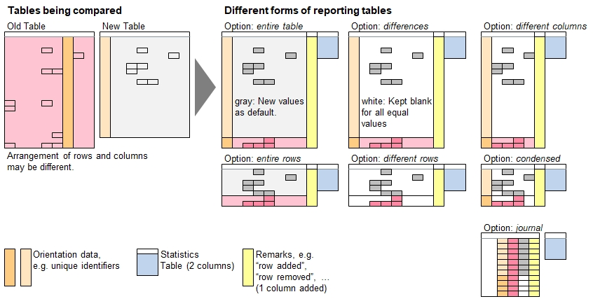

Introduction
Two report types are suported: tabular (generated with all reporting options except 'journal') and journal.
All reports also contain a statistics section with the headers 'Statistics Parameters' and 'Statistics Values'.

Tabular Reports
The report contains the columns (with header names) of the newer table plus one additional column called
'Change Remarks'. This column indicates the changes identfied, typically "Data modified", "Row added", and "Row deleted".
Journals
Journals contain a sequential summary of all changes found. One row is devoted for every change. It contains the following columns:
| Header Name | Contents |
|---|---|
| Old Table Row Number | 1 or higher |
| New Table Row Number | 1 or higher |
| Old Table Column Number | 0 or higher |
| New Table Columb Number | 0 or higher |
| Orientation Identifier header names | Corresponding data contents |
| Header Name | Header name related to change reported |
| Old Value | Old contents |
| New Value | New contents |
| Change Remarks | Row added, Row deleted, Column deleted, Column added, or blank if just contents have changed. |
table load( t1, "Examples/Cities.csv" );
table keep columns ( t1, {City, Country, Inhabitants, Famous attraction, Moving along } );
table keep selected rows ( t1, [Inhabitants]>=1000000 );
echo("Original table:");
table list ( t1 );
echo("Create a modified table:");
table copy table ( t1, t2 );
table sort rows ( t2, City );
table delete selected rows( t2, [City]==Los Angeles);
table delete columns( t2, Country );
table insert columns( t2, Time Zone, "", 3 );
table append( t2, {{ Shanghai, 23000000, "Jing'an Temple", "UTC+8", Bicycle, Bla }} );
// Last entry 'Bla' lies outside the colums with headers and is considered an orphan.
[t2:City,Paris,Famous attraction] = Moulin Rouge;
[t2:City,Paris,Time Zone] = "UTC+1";
[t2:City,New York City,Inhabitants] = 8323340;
table list ( t2 );
echo("Compare and create journal as output:");
table compare( t2, t1, report, City, journal );
table delete columns( report, {Statistics Parameters, Statistics Values} ); // Ignore them for now
table delete blank rows( report );
echo("Comparison Report:");
table rename headers( report, { Old Table Row Number, Old Table Column Number, New Table Row Number,
New Table Column Number }, { OR, OC, NR, NC } ); // Abreviate headers to fit on page
table list ( report );Original table:
0 : City | Country | Inhabitants | Famous attraction | Moving along
1 : New York City | USA | 8300000 | St. of Liberty | Taxi
2 : Philadelphia | USA | 1500000 | Independence hall | PCC streetcar
3 : Montréal | CAN | 1700000 | Hôtel du Parlement | Skidoo
4 : Los Angeles | USA | 3800000 | Hollywood | Car
5 : Vienna | AUT | 1800000 | Prater | Fiacre
6 : Bangkok | THA | 8250000 | Wat Phra Kaeo | Longtail boat
7 : Paris | FRA | 2240000 | Eiffel Tower | Métro
Create a modified table:
0 : City | Inhabitants | Famous attraction | Time Zone | Moving along |
1 : Bangkok | 8250000 | Wat Phra Kaeo | | Longtail boat |
2 : Montréal | 1700000 | Hôtel du Parlement | | Skidoo |
3 : New York City | 8323340 | St. of Liberty | | Taxi |
4 : Paris | 2240000 | Moulin Rouge | UTC+1 | Métro |
5 : Philadelphia | 1500000 | Independence hall | | PCC streetcar |
6 : Vienna | 1800000 | Prater | | Fiacre |
7 : Shanghai | 23000000 | Jing'an Temple | UTC+8 | Bicycle | Bla
Compare and create journal as output:
Comparison Report:
0 : OR | OC | NR | NC | City | Header Name | Old Value | New Value | Change Remarks
1 : 6 | 1 | 1 | | Bangkok | Country | THA | | Column deleted
2 : 3 | 1 | 2 | | Montréal | Country | CAN | | Column deleted
3 : 1 | 2 | 3 | 1 | New York City | Inhabitants | 8300000 | 8323340 |
4 : 1 | 1 | 3 | | New York City | Country | USA | | Column deleted
5 : 7 | 3 | 4 | 2 | Paris | Famous attraction | Eiffel Tower | Moulin Rouge |
6 : 7 | | 4 | 3 | Paris | Time Zone | | UTC+1 | Column added
7 : 7 | 1 | 4 | | Paris | Country | FRA | | Column deleted
8 : 2 | 1 | 5 | | Philadelphia | Country | USA | | Column deleted
9 : 5 | 1 | 6 | | Vienna | Country | AUT | | Column deleted
10 : | | 7 | 1 | Shanghai | Inhabitants | | 23000000 | Row added
11 : | | 7 | 2 | Shanghai | Famous attraction | | Jing'an Temple | Row added
12 : | | 7 | 3 | Shanghai | Time Zone | | UTC+8 | Row added
13 : | | 7 | 4 | Shanghai | Moving along | | Bicycle | Row added
14 : 4 | 2 | | | Los Angeles | Inhabitants | 3800000 | | Row deleted
15 : 4 | 3 | | | Los Angeles | Famous attraction | Hollywood | | Row deleted
16 : 4 | 4 | | | Los Angeles | Moving along | Car | | Row deleted
17 : 4 | 1 | | | Los Angeles | Country | USA | | Row deleted